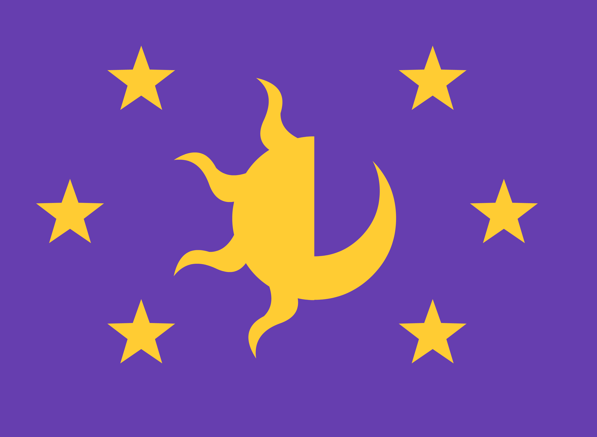
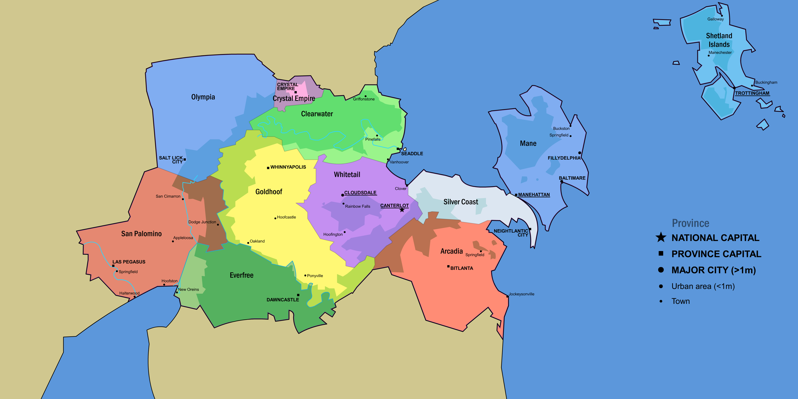

Principality of Equestria
4.7% Sylvannian
2.3% Griffish
1.3% Others
Princess Luna
Equestria
The Principality of Equestria, commonly known as Equestria, is a large nation situated on the central continent of Equus. Bordered by the Celestial Sea to the east and the Lunar Sea to the west, it includes a variety of geographical regions across its 11 provinces, housing over 60 million inhabitants. Equestria’s government is a parliamentary constitutional monarchy, ruled by Princesses Celestia and Luna, with Canterlot serving as the capital and Manehattan as the largest and most populated city, known as the cultural and financial hub.
History
Equestria was founded over a thousand years ago by three pony tribes: Earth Ponies, Unicorns, and Pegasi, each bringing unique strengths. The unification of the tribes under Princess Celestia marked the dawn of Equestria’s civilization, with Canterlot becoming the heart of governance and arcane study. In 2013, the Crystal Empire reappeared after a millennial absence, and was reintegrated as a special province within Equestria.
Geography
Equestria's geography is diverse, with eastern coastal plains and beaches, central mountains, and extensive western deserts. Significant regions include the Everfree Forest, known for its unique wildlife, and the Crystal Mountains to the north.
Politics
Equestria is a constitutional monarchy governed by a Parliament and led by Princesses Celestia and Luna, who serve as ceremonial and executive heads. The government structure includes provincial councils, with select cities holding “Sovereign City” status, giving them autonomy similar to that of provinces.
Economy
Equestria’s economy is diverse, encompassing agriculture, technology, tourism, and entertainment. Agricultural hubs like Goldhoof supply much of the nation’s food, while tech cities like San Cimarron drive innovation. The urban sprawls Manehattan and Las Pegasus on the other hoof act as tourism centers, with the former also serving as the financial capital of the country, hosting the headquarters of many Equestrian companies as well as the national bank. The Equestrian currency is the bit and still mainly use coins as its legal tender.
Demographics
With a population over 60 million, Equestria is primarily inhabited by ponies (Earth Ponies, Unicorns, and Pegasi but also Thestrals and Crystal Ponies). Minorities include griffons, zebras, changelings, and kirins. Ponish is the official language, although Prench and regional dialects are also spoken.
Culture
Equestrian culture values harmony, friendship, and cooperation, principles reinforced by the teachings of Princess Celestia and events like the annual Summer Sun Celebration. Entertainment, sports, and education are integral to Equestrian society, with competitive flying and magic academies like the Wonderbolt Academy and the School for Gifted Unicorns gaining renown.
Provinces and Cities
|

|
{kind=link}
- Silver Coast: Known for its beautiful beaches, the Silver Coast spans Canterlot’s suburbs to Manehattan's edges, with key locations in tourism and finance.
- San Palomino: A vast desert region with diverse hubs like Las Pegasus (tourism) and Halterwood (film industry), reflecting the pioneering spirit of the western frontier.
- Arcadia: This province is agriculturally rich and home to the historic Bitlanta University. It also houses important archaeological sites of pre-Equestria pony tribes.
- Goldhoof: Known as Equestria’s breadbasket, it’s mainly rural with Whinnyapolis as its largest city and a significant contributor to agriculture.
- Crystal Empire: Having reappeared after a thousand year of isolation, the empire is now integrated within Equestria and remains distinct in population and culture, especially in magical studies. It benefit from an additional special status and is led by Princess Mi Amore Cadanza.
- Olympia: Known for its mountainous terrain and timber industry, Olympia has Salt Lick City as a main settlement.
- Everfree: Encompasses the Everfree Forest and nearby towns. Its mysterious terrain has made it difficult to administer, but recent reorganization led to its establishment as a province after the return of Princess Luna and the reconstruction of Dawncastle.
- Clearwater: A northern province known for Seaddle and a prominent griffon population. The province supports high-tech industries and is the primary connection to the neighboring Crystal Empire.
- Mane: Encompasses northern Manehattan, with key coastal cities like Fillydelphia and Baltimare. It is an economic powerhouse in manufacturing and shipping.
- Whitetail: Home to the capital Canterlot as well as the pegasus flying city of Cloudsdale. Whitetail is a historic center with many unicorn and pegasus communities as well as rich forests and valleys.
- Shetland Islands: A province with a strong independent identity, known for Trottingham and as a historical industrial center. More recently, the islands has been getting known for hosting the Jetstream Space Launch Center near Trottingham.
See also
Notes
Further readings on regional dynamics, economic centers, and political developments are available in the Equestrian National Archives.
References
- Official Equestrian Government Website - National Archives
- Historical Sources on Equestrian Provinces and Founding
- Canterlot University Press, "Studies on Modern Equestria"